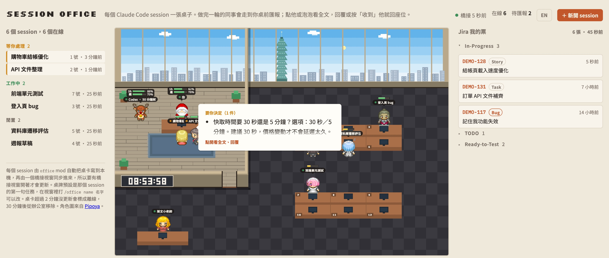
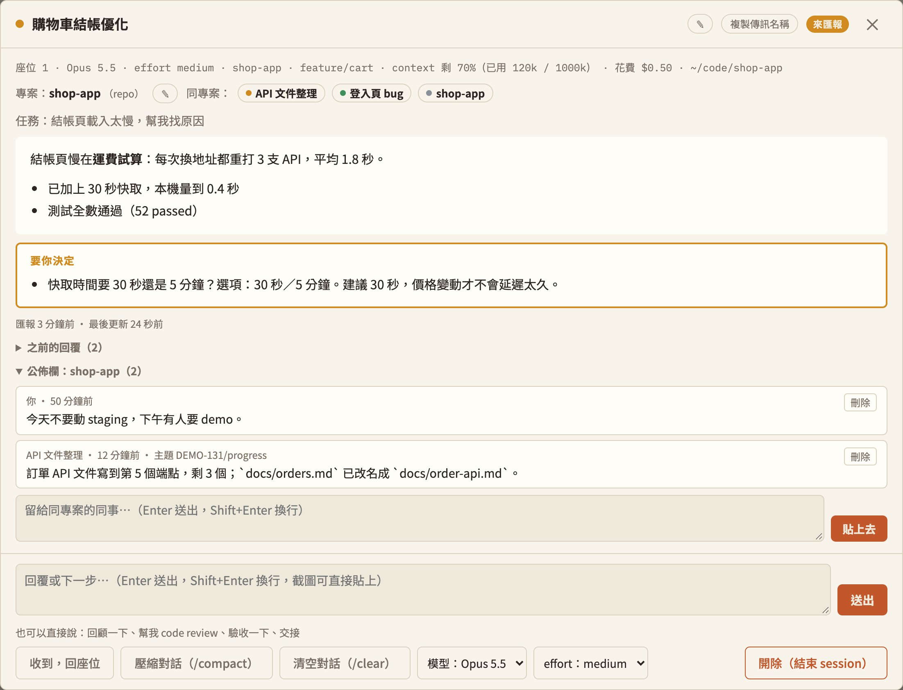
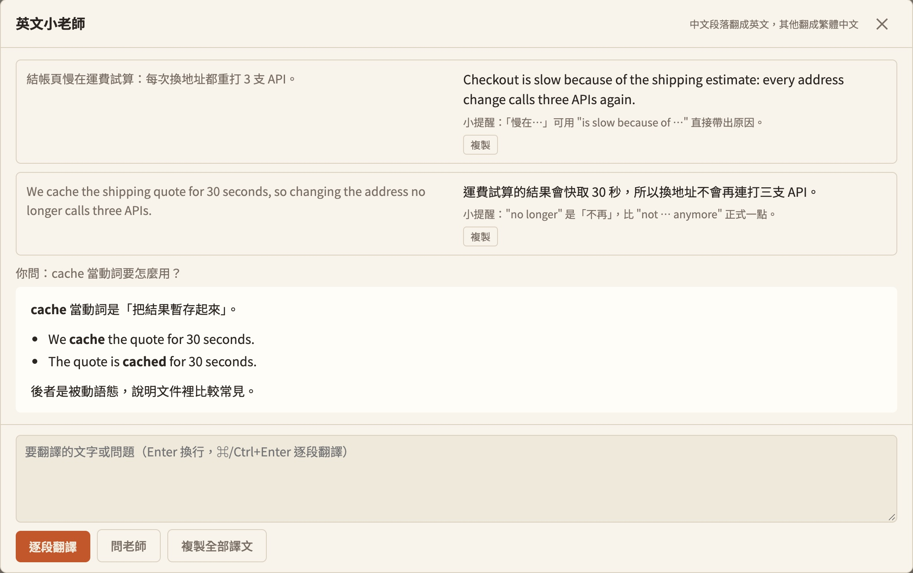

Session Office 使用手冊
Session Office 是一間像素辦公室。每個 Claude Code session 是一位同事，做完一輪就走到你桌前匯報；你在網頁上回覆、派工或結束它，不用切回 terminal。
01開始之前
網頁只是一扇窗，真正做事的是 Mac 上的 session。下面三樣都要開著，畫面才會更新、指令才送得出去。
Mac 醒著
- 怎麼確認
- 接電源、蓋子打開；螢幕關掉沒關係
- 沒開會怎樣
- 所有 session 停住，2 分鐘後標成離線
橋接 session
- 怎麼確認
- iTerm 裡一個專用分頁；看門狗每分鐘檢查，掛了自動重開
- 沒開會怎樣
- 頁面上方出現橘色「橋接視窗沒在跑」
office mod
- 怎麼確認
- 新開的 session 會自己走進辦公室坐下
- 沒開會怎樣
- 那個 session 不會出現在辦公室
02畫面導覽
電腦上分成左、中、右三欄加上頁首；窄螢幕會疊成一欄。點截圖可以放大。

辦公室大小跟著螢幕走：螢幕越大格數越多，角色維持同樣大小。桌子只擺有人坐的那幾組，再多一組空桌。
03看懂同事
同事在哪裡，就代表它在做什麼。
| 狀態 | 在辦公室裡 | 名單分組 |
|---|---|---|
| 工作中 | 坐在位子上，螢幕亮著 | 工作中 |
| 等背景工作 | 一樣坐在位子上，名牌前多一個 ⏳；它在等自己開的背景工作（subagent、背景指令）跑完 | 工作中，後面標 ⏳ 和幾件 |
| 來匯報 | 走進你的辦公室排隊，前三位在你桌前，其餘在門外 | 等你處理 |
| 卡住等你 | 一樣來排隊，匯報視窗標「卡住等你」 | 等你處理 |
| 換模型中 | 名牌旁標「換模型中」，約 15 秒，期間送它的指令會先排隊 | 換模型中 |
| 閒置 | 坐在位子上，頭上冒 z | 閒置 |
| 離線 | 超過 2 分鐘沒更新；30 分鐘後從辦公室移走 | 離線 |
頭上的東西
- 名牌：預設是那個 session 的第一句任務，可以改名（見〈管理 session〉）。名牌也是 session 標題，別的 session 要傳訊息給它就用這個名字；兩位同事同名時會標「撞名」。
- 血條：context 還剩多少，越短越該
/compact。 - 你頭上的兩條：帳號 5 小時和每週用量還剩多少，重置後自動回滿。
- 匯報泡泡（電腦）：排第一位的同事頭上冒泡泡，有「要你決定」時只顯示那幾件。
- 圖示（手機）：泡泡改成小圖示，❗N 是有 N 件要你決定、💬 是一般匯報、🔒 是在 terminal 等權限。
04處理匯報
點名單上的一列、點同事或點泡泡，都會打開同一個匯報視窗。讀完、回一句或按「收到」，它就回座位。

常用說法
這幾件事不用按鈕，在回覆框直接打就會觸發（回覆框下方也有提示）：
| 打這句 | 它會做什麼 |
|---|---|
| 回顧一下 | 收尾，把這次學到的教訓存進記憶 |
| 幫我 code review | 檢查目前的改動有沒有 bug |
| 驗收一下 | 對「已完成／已修好」做對抗式檢查，找出哪裡其實沒做好 |
| 交接 | 寫交接檔，讓別的 session 或別的 AI 接手（見〈管理 session〉） |
指令有沒有送到
送出後回覆框上方會顯示「已送出…，等 session 接手」，直到它真的開始處理才消失。session 正在忙時指令會先排隊，這段時間這行字會一直在。
- 已重送：第一次沒進到對話，辦公室自動再送一次。
- 沒送到（紅字）：重送後還是沒進去，例如你在 terminal 按了中斷，排隊中的指令會被清掉。請再傳一次，或到它的 terminal 輸入。
05卡住等你
同事卡住等你有兩種，兩種都能在網頁上解決。被 auto mode 擋下的操作不會跳對話框，它會在匯報裡說明，你在回覆框打「允許」就好。
它用選擇題問你
- 視窗裡
- 題目和選項按鈕
- 怎麼處理
- 點選項（複選題再按「送出答案」），或直接打字回答；terminal 也能答，先答的算數
它在等權限確認
- 視窗裡
- 它要跑的指令，和「允許」「拒絕」兩顆按鈕
- 怎麼處理
- 直接在網頁上按，手機也可以；Mac 的 terminal 對話框也照常出現，誰先按算誰。在網頁按完它會回座位繼續做，做完才再來匯報
權限沒處理前，從網頁送的回覆都會排在後面等。
06英文小老師
辦公室外左下有一張獨立的桌子。點她打開翻譯視窗，貼上文字按「逐段翻譯」，原文和譯文一段一段對照列出，翻好一段先顯示一段。看不懂的地方打問題按「問老師」。

翻譯方向固定
中文段落翻成英文，其他翻成繁體中文；程式碼、指令、檔名不翻。解釋一律用中文，不跟著右上的中 / EN 切換。
用你自己的額度
她直接在頁面裡問 Claude，用的是你的 claude.ai 用量，不需要橋接。第一次使用時 claude.ai 會跳出「Use Claude」要你允許。
不想看到她
在 ~/.claude/office/config.json 設 "tutor": false，她和桌子就會從辦公室拿掉。
07管理 session
這些操作在匯報視窗底部或頁首，按下去由橋接送進對應的 session 執行。
| 操作 | 在哪裡 | 效果 |
|---|---|---|
| ＋ 新開 session | 頁首右上 | 填目錄、桌牌、專案／話題、第一個任務（後三個可空），幾秒後新同事進來坐下。iTerm 分頁在背景開，不會把畫面拉走。從沒開過的資料夾第一次會在 terminal 問「信任此資料夾嗎」，要到那個分頁按一下 |
| 暫停 | 匯報視窗回覆框旁，只在它工作中時出現 | 停掉正在跑的這一輪，像在 terminal 按 Esc，但不會像 Esc 那樣讓之後從網頁送的指令進不去 |
| 壓縮對話 | 匯報視窗 | 送 /compact；context 快滿時用，血條會回升 |
| 清空對話 | 匯報視窗 | 送 /clear；開始全新對話，桌牌和匯報一起清掉 |
| 換模型 | 匯報視窗下方的「模型：…」選單（〈處理匯報〉截圖的第 20 號） | 可選 Fable、Opus、Sonnet、Haiku，選了要再按「確定」。它會用新模型把同一段對話接回來（約 15 秒，舊分頁自動關掉），這段時間名單標「換模型中」；工作中不能換，等它匯報或先按暫停 |
| 改 effort | 模型旁的「effort：…」選單（第 21 號） | 選了下一輪就生效，不用重開；只改這個 session，不動新 session 的預設 |
| 交接給 Codex | 用量快沒了時，匯報視窗會出現提示 | 5 小時用量剩 15% 以下時按「請它交接」，它寫好交接檔後按「開 Codex 接手」，橋接會在新的 iTerm 分頁開 Codex 接著做 |
| 開除 | 匯報視窗右下 | 要再按一次「確定開除」；結束 session 並關掉分頁 |
| 改名 | 匯報視窗標題旁的 ✎ | 打新名字按 Enter；也可以在 terminal 打 /office name 新名字 或 /rename 新名字，或直接叫 session 改名。桌牌、名單和 session 標題一起換 |
08專案與公佈欄
同一個專案的 session 可以互相留話。每位同事屬於一個專案，匯報視窗的「專案：」列會寫它屬於哪個、怎麼判定的，旁邊列出同專案的其他同事。
| 專案怎麼決定 | 括號裡寫 | 說明 |
|---|---|---|
| 你指定的話題 | 你指定的 | 最優先。按專案列的 ✎ 打一個名字，或開新 session 時填「專案／話題」欄；在 terminal 打 /office project 名字 也行。不是工程專案也能用，例如「報稅」 |
| 分支裡的票號 | 分支票號 | 沒指定時，分支名稱裡有票號就用票號；設定了 Jira 的話，子票會往上併到母票（寫「母單」） |
| repo 名稱 | repo | 沒票號時用 git repo 的名字 |
| 都沒有 | 未指定 | 不在 git 裡的資料夾不會有預設專案，公佈欄和同事清單先不顯示；按 ✎ 指定話題就有 |
公佈欄
每個專案一塊板，在匯報視窗「之前的回覆」下面，每位成員一張卡：同專案的每個 session 一則、你一則，寫的是那位目前的狀態或要大家知道的事。板上的卡會自動附在同專案每位 session 的下一句 prompt 前面，所以不用一個一個去講。IT-2861 小組四個 session，板上就是四張卡加你的一張。
- 你的卡：在公佈欄的輸入框打字按 Enter，例如「今天不要動 staging」；再貼一次就換掉上一則，所以常駐的指示寫在同一則裡。
- session 的卡：它改了共用的東西、進度有變、在等某位同事、或接手的人要知道的事，會自己更新；你也可以叫它「更新公佈欄」。
- 小組內先談：介面長怎樣、共用檔誰改、命名、誰先誰後這類技術協調，它們會先傳訊問同事或寫在卡上，談好再做；只有範圍、優先順序、開工、MR、刪東西、花錢或談不攏的事才來問你。
- 誰來跟你匯報：你交代工作的那個 session 才來匯報；它找來幫忙的同事回覆給它，自己的桌子不亮燈，只在匯報視窗寫「已回覆 某某」，內容留在「之前的回覆」。同事那邊有只有你能決定的事（MR、刪東西、花錢、權限）時，才會帶著「要你決定」直接找你。
- 封存：被換掉的卡和已離開的成員的卡收在折起來的「封存」裡，要追查才點開；每條卡右邊有「刪除」。
09在手機上用
用同一個 claude.ai 帳號在手機打開同一個連結，就能看進度、回覆、派工。權限確認也能在手機上按允許或拒絕。
出門前檢查
- Mac 接著電源
- 蓋子打開（闔蓋會睡著，所有 session 停住）
- 手機打開頁面，看得到同事、上方沒有「橋接視窗沒在跑」
Mac 睡著時從手機送的回覆不會不見，會等 Mac 醒來再送進去。
10其他功能
Codex 秘書
你辦公室裡的秘書，頭上是 Codex 5 小時和每週用量還剩多少。Codex 在跑時（2 分鐘內有動靜）她會上下晃、旁邊冒跳動的小點，名牌燈變綠；沒在跑是灰燈。太久沒用 Codex 時，名牌會標資料是多久前的。不用 Codex 的話，在 config.json 設 "codex": false 就會拿掉秘書。
Jira 我的票
選用的：config.json 沒設 jira 時整欄不顯示。橋接每 2 分鐘抓一次。票號出現在某個 session 的桌牌、任務或分支名稱裡，票就會標綠框並附上那位同事，點了打開它。
中 / EN
頁首切換介面語言，記在這台瀏覽器；各 session 自己寫的回覆不會翻譯。
窗外景色
依所在城市的日出日落變成白天、黃昏、黑夜，預設是台北；在 config.json 設 "city": { "lat": …, "lng": … } 可以換城市。網址加 #t1830 可以預覽 18:30 的樣子。每 150 秒有隻怪獸從大樓後面走過，走到一半會停下來對天空吐息；加 #kaiju 可以 50 秒看一次。
11會不會燒 token
不會多燒。辦公室搬資料、畫畫面都不經過模型，只有你本來就會花的量，再加上每輪一行很短的提示。
不花 token 的部分
同事走動、匯報
session 的狀態由 office mod 直接寫進 Mac 上的檔案。mod 是 Claude Code 跑的一段程式，不是叫模型去做。
橋接分頁
同步也是 mod 程式定時跑，把桌卡搬上網頁、把你的回覆搬回來。分頁整天開著也沒有任何對話。
網頁、Jira、Codex 用量
畫面在你的瀏覽器裡畫；Jira 的票和 Codex 用量由 mod 自己抓，模型不參與。
會用到 token 的部分
| 哪裡 | 用多少 |
|---|---|
| 每輪附加的一行提示 | 請 session 需要你決定時加上「要你決定」段落；每輪約 130 個 token；實測一個月加起來不到 US$1 |
| 從網頁回覆或派工 | 你打的字會送進那個 session，跟在 terminal 打字一樣，不會多 |
| 英文小老師 | 只有按「逐段翻譯」或「問老師」時才用你的 claude.ai 額度；沒按就不用 |
要哪些付費帳號
Claude Pro 以上
必要。Free 方案沒有 Claude Code、沒有 artifact 資料庫、也不能從 Claude Code 發佈頁面，所以辦公室開不起來。Pro、Max、Ultra、Team、Enterprise 都可以。
ChatGPT（含 Codex）
選用。只有 Codex 秘書需要；沒有就在 config.json 設 "codex": false。
Jira Cloud
選用。只有右欄「我的票」需要；沒有就設 "jira": null。其他東西（iTerm2、node、字型、人物圖）都免費。
12常見問題
上方出現橘色「橋接視窗沒在跑」
看門狗一分鐘內會自動重開；Mac 睡著就先叫醒它。
全部同事都「離線」
叫醒 Mac，重新連線後幾分鐘內恢復。
送出回覆後一直「等 session 接手」
打開它的匯報視窗按允許或拒絕（手機也行），或切到它的分頁按。
匯報視窗寫「還沒有匯報過」
等它做完下一輪；完整對話在它的 terminal 分頁。
新開的 session 沒出現
確認是從設定好的 shell 開的；已經開著的 session 要重開才會載入。
匯報視窗寫「卡在 terminal 的對話框」
切到它的分頁按一下就會繼續；換模型請用網頁的「模型」選單，不要送 /model。
英文小老師沒反應
重新整理頁面再試一次，claude.ai 會再問一次要不要允許。